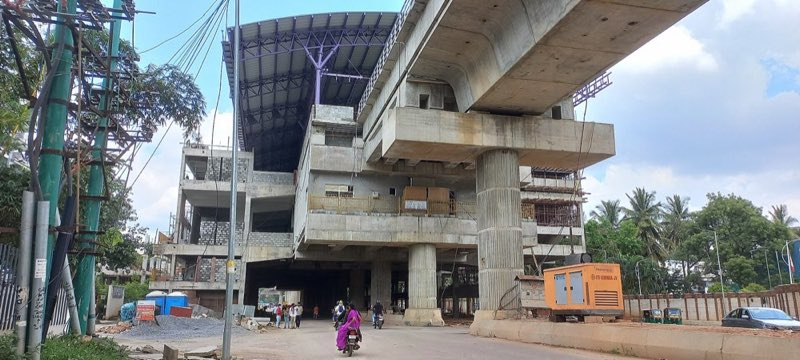
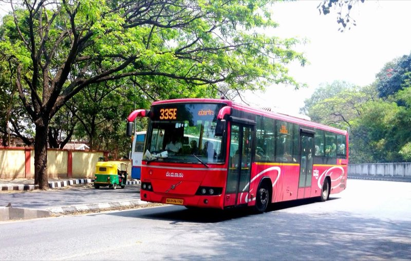
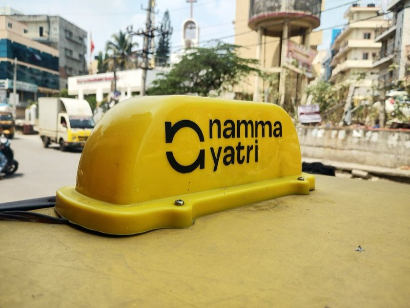
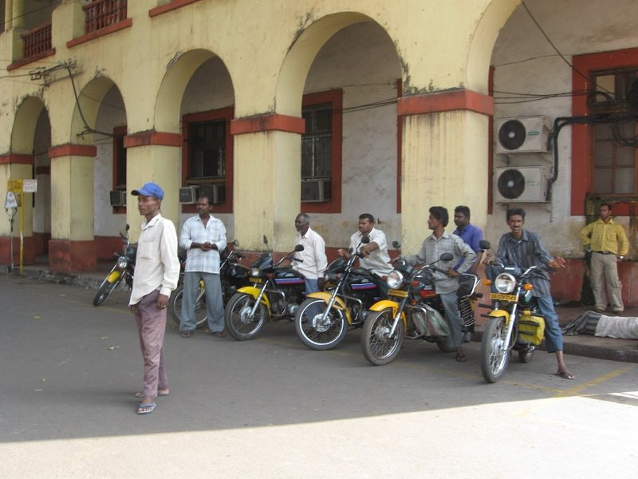
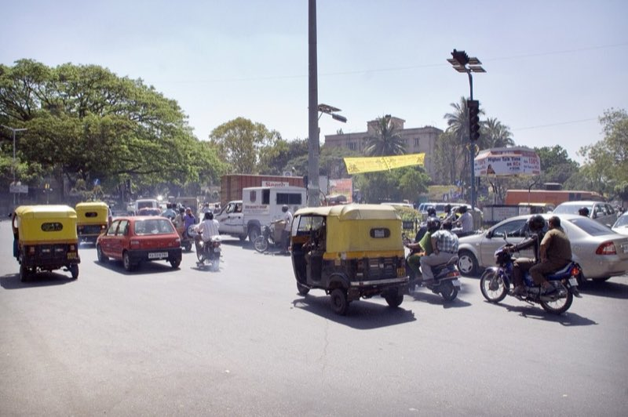

Plan a trip.
Pick two places. Every option comes back ranked, with where its fare comes from.
Comparing…
Tap the map to set a start or destination
- Metro
- Bus
- Auto
- Bike taxi
- Cab
How did it pick the metro?
Every fare, with its source.
Uber, Ola, Rapido and Namma Yatri do not share live prices with other apps, so each number is labelled honestly and each result links to the real app.

Bus

Auto

Bike

Cab
For the exact price right now, open a result above and tap the app button.
Built from scratch, in C.
Live numbers from the running backend, beside the parts that produce them.
- Metro stations in the graph
- 0
- Binary min-heap
- Dijkstra always takes the cheapest place next.
heap.cpops it in O(log n). - Metro lines
- 0
- Graph states
- 0
- Last comparison took
- n/a
- Demo locations
- 0
- Demo connections
- 0
- Dijkstra, A* and Yen
- One search in
routing.cfinds the best path; Yen's algorithm finds the next best ones. - Road data
- checking
- Metro timetable valid for
- n/a
- Map calls today
- n/a
- Own HTTP server
http.c: sockets, keep-alive, gzip
From your start. Pick a place and the comparison runs at the top.